NO.01 / 2026.07–2026.10
芒果TV综艺宣传实习
综艺宣传实习生
参与《舞蹈新风暴》《心动双重奏》两档综艺宣传，与团队协作完成热点内容、宣传文案和传播素材的策划与跟进。
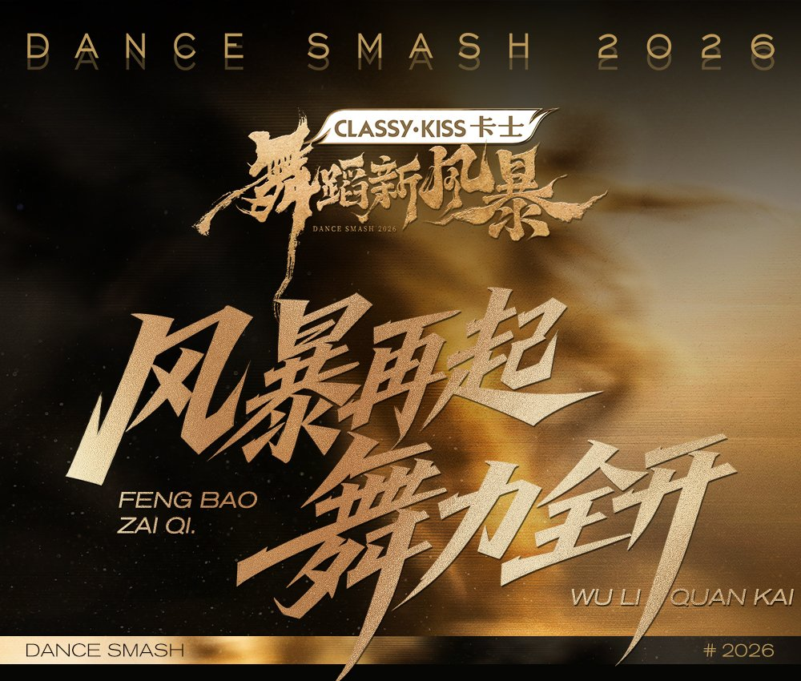
2档综艺项目
20+参与热点提报
约90%热点提报成功率
702.1万代表词条榜单热度
01 / 实习概览
从节目内容到传播落地
实习期间参与两档综艺的内容宣传工作，接触从节目内容梳理、传播角度提炼，到文案和素材交付、热点提报跟进的完整协作流程。
《舞蹈新风暴》
《心动双重奏》
02 / 热点提报与短视频内容
一条热点如何被做出来
审片提炼
从节目正片中判断具有传播潜力的情节和人物内容。
标题与 brief
围绕热点方向拟定短视频标题，整理剪辑需求。
脚本修改
剪辑方完成脚本后，参与调整内容结构和表达重点。
成片调整
结合传播角度反馈成片，配合修改画面和内容呈现。
提报跟进
完成热点提报并持续记录上榜和热度结果。
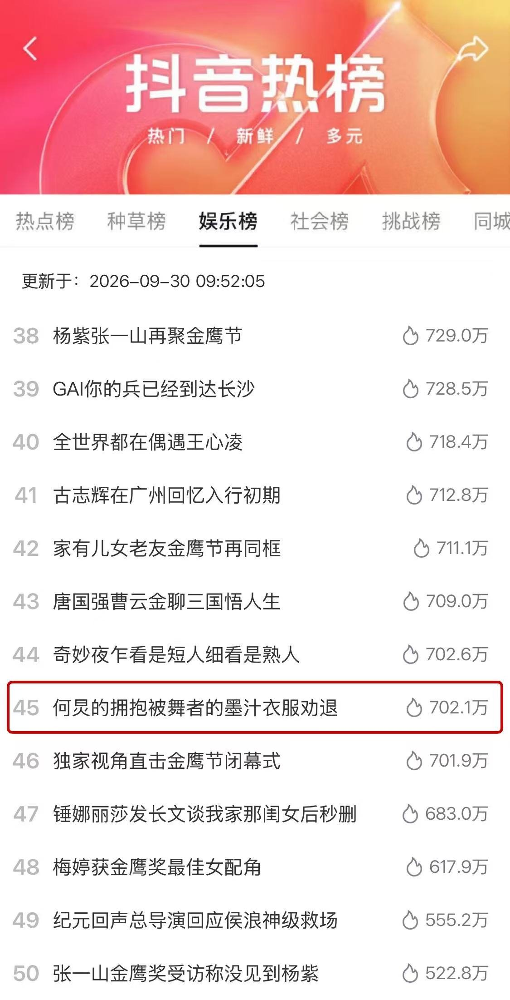
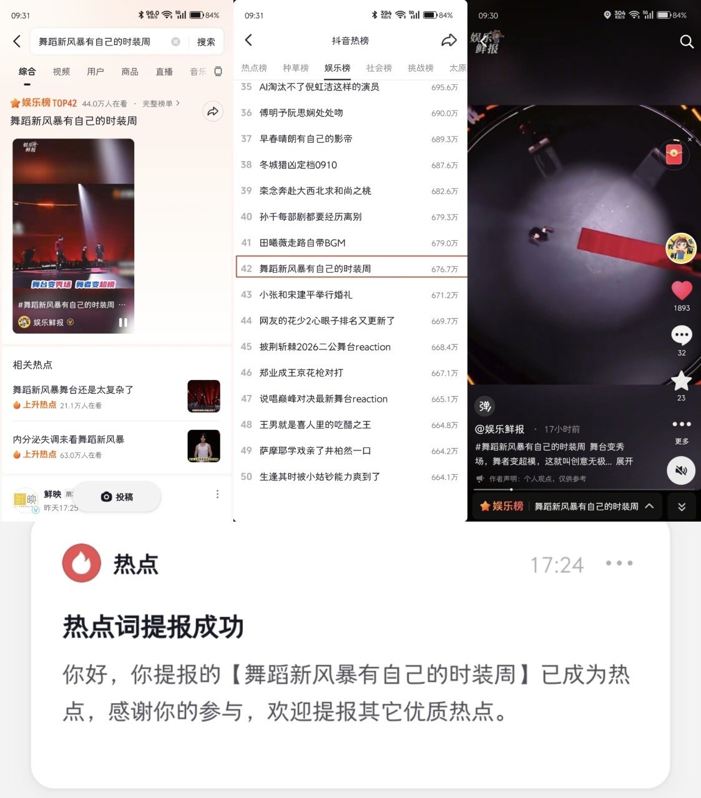
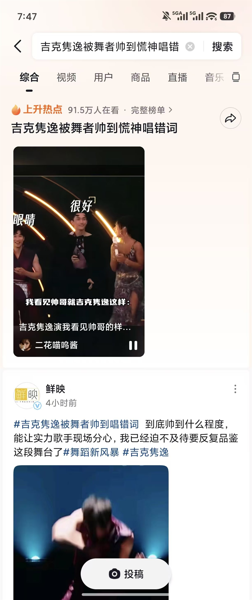
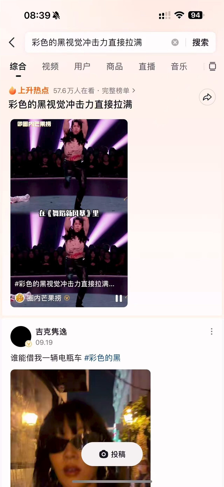
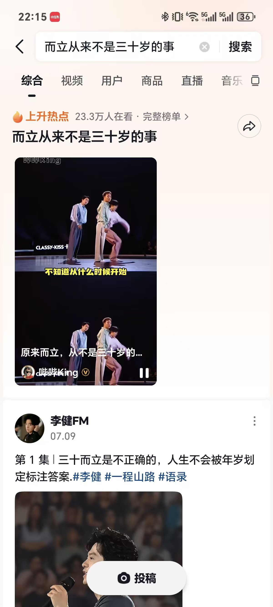
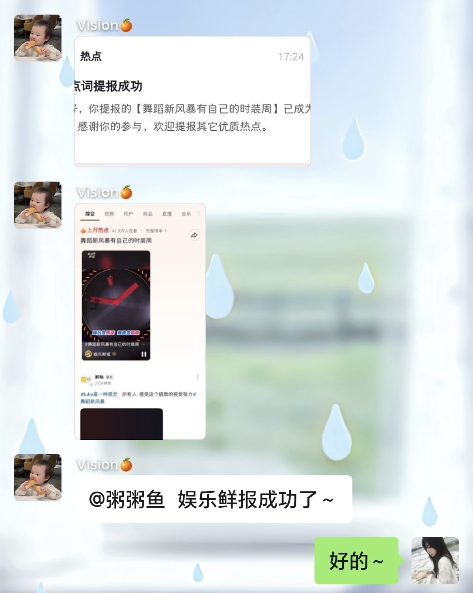
03 / 宣传文案与媒体采用
从供稿到媒体发布
围绕节目内容撰写宣传文案并交由团队对接媒体。国家人文历史、新华社、中国日报等账号发布的相关内容中，摘选采用了我撰写的文案。
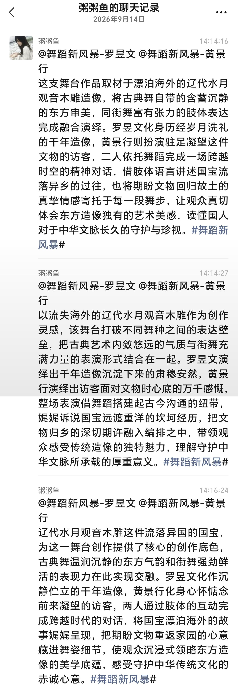
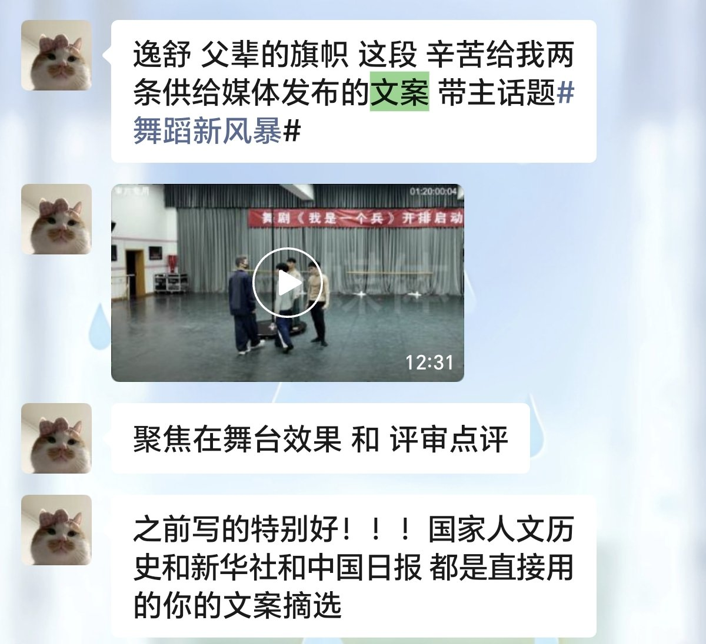
04 / 内容策划与传播执行
两档节目中的具体工作
《舞蹈新风暴》
媒体联动策划
负责提出联动账号方向，撰写联动概述、设计联动形式并拟定话题词，参与国家人文历史、新华社、中国日报相关联动内容的策划。
《心动双重奏》
博主传播素材包
根据节目话题词梳理整期正片，筛选对应片段并整理成素材包，供合作博主制作和发布内容。
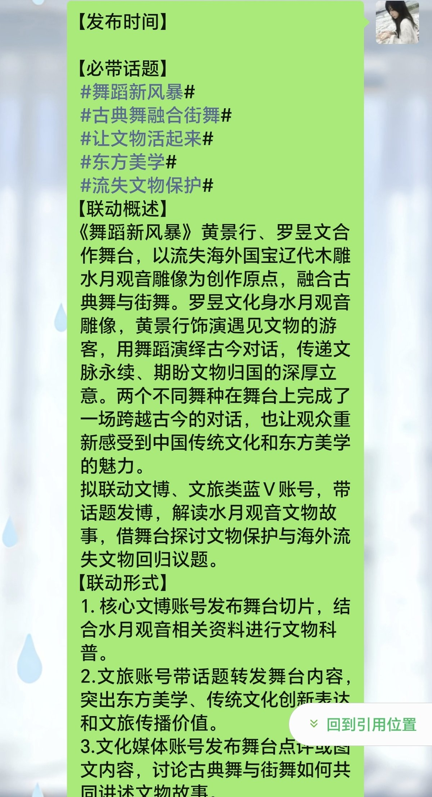
05 / 项目结果与工作复盘
项目成绩与个人收获
这段实习让我参与了综艺宣传从内容判断到传播跟进的多个环节：先从正片中找到适合传播的内容，再把它整理成标题、brief、文案或视频素材，交由团队和合作方继续执行。
以下战报数据为团队项目整体传播结果，用于说明项目背景与传播规模。
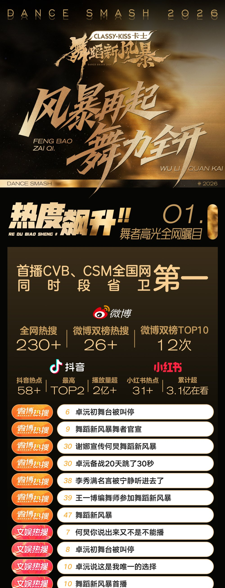